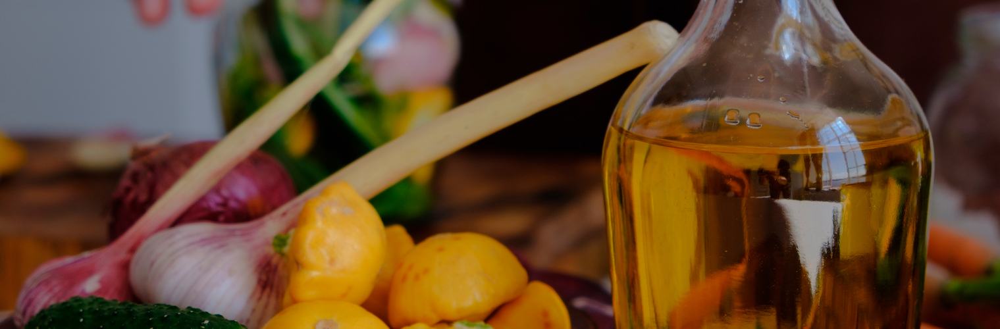
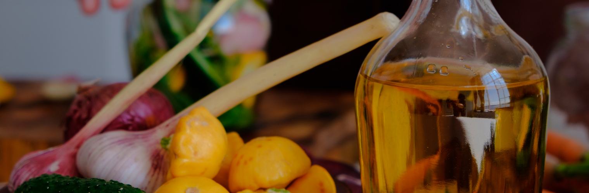
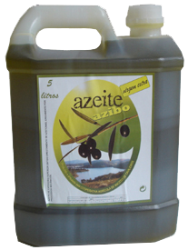
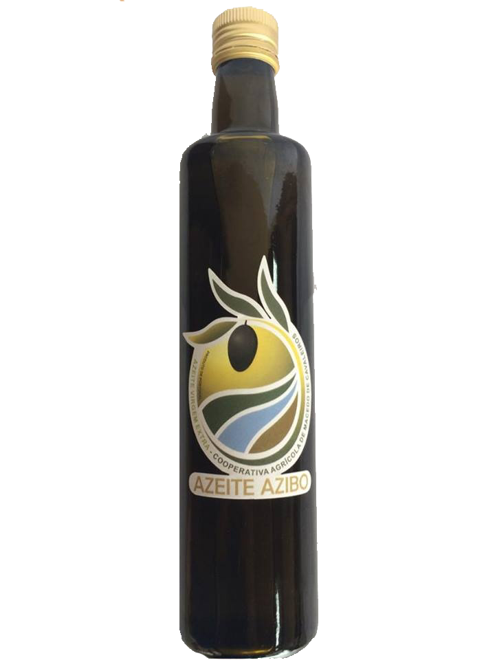

Olive Oil
What's In it?
Equipped with modern equipment, we have an olive reception line, with a leaf remover,washing machine and continuous weighing scale. The main olive varieties delivered bythe cooperative are the Verdeal Transmontana, Madural and Cobrançosa varieties, all ofwhich are characteristic varieties of the Trás-os-Montes region. It is these varietiesthat give the organoleptic characteristics to the olive oil of our region and they arethe green, bitter and spicy flavor and at a chemical level low acidity values.Buy Azibo Olive Oil 5LThe extra virgin olive oil of the brand "CAMC"* is obtained only through mechanical
processes, without additives or preservatives. This high quality olive oil has been
awarded a Gold Medal in well-known international olive oil competitions.
Olive variety: Cobrançosa, Verdeal and Madural.
Colour: greenish yellow Acidity: 0.3% Flavor and aroma: very fresh fruity flavor, in
a harmonious combination between bitter and spicy.
Its chemical characteristics are in accordance with Regulation (EC) n°2568/91 and
subsequent amendments.
BuyAzibo Olive Oil 500ML
Olive variety: Cobrançosa, Verdeal and Madural.
Color: greenish yellow
Acidity: 0.3%